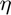

Homework 1
For this assignment, a Perceptron Learning Algorithm was implemented in MATLAB.
Contents
Part 0: Creating the Data Set
To create a data set, the provided pla_getdata.m is used, with an additional output f added, which returns the hidden target function:
N = 10; % data size
[x, y, f] = pla_getdata(-1, 1, 2, 11*N);
Part 1: PLA and Testing
The PLA algorithm was implemented in pla.m, and a testing script pla_test.m was created for simple use. The weight vector w is preset as [0; 1; 1.5] and then adjusted by the PLA algorithm. Testing was done with two data sizes - N=10 and N=100 - and the average accuracy and iterations were found over 1000 runs
N=10
The results of this size varied wildly. With just 10 points in the training set, there's a higher likelihood that the training set does not accurately reflect the target function. In such cases, accuracy could be extremely low. The average accuracy across 1000 runs was calculated to be 89.5%, and the average number of iterations per hypothesis was 11.2. From this data, the approximate disagreement can be calculated to be 10.5%. Plots compare an example hypothesis g to the hidden function f with a training set.
[x, y, g, f, i, a] = pla_test(10, 1000); pla_plot_f(x, y, g, f); mi = mean(i) ma = mean(a)
N=100
Using this size resulted in a much more precise PLA, with an accuracy of 98.7% over 1000 runs, with an approximate disagreement of 1.3%. The cost of this is processing speed. Hypotheses took an average of 111.7 iterations to be judged as accurate enough.
[x, y, g, f, i, a] = pla_test(100, 1000); pla_plot_f(x, y, g, f); mi = mean(i) ma = mean(a)
mi =
10.6850
ma =
0.8894
mi =
104.3120
ma =
0.9871
Part 2: Modifying PLA
To further increase the PLA's accuracy, distance can be factored in when adjusting the weights of each hypothesis. Two more variables are thus added: distance s(t) and the learning factor . For this, two new functions were created. The algorithm is trained with a set of 100 points and tested on a set of 10,000, and its iterations are limited to 1000 per guess. is tested for values of .0001, .01, 1, and 100. Again, plots compare an example hypothesis g to the hidden function f with a training set.
$\eta$=.001
[x, y, g, f, i, a] = pla_test_s(100, 1000, .0001);
pla_plot_f(x, y, g, f);
mi = mean(i)
ma = mean(a)
% *$\eta$=.1*
[x, y, g, f, i, a] = pla_test_s(100, 1000, .01);
pla_plot_f(x, y, g, f);
mi = mean(i)
ma = mean(a)
$\eta$=1
[x, y, g, f, i, a] = pla_test_s(100, 1000, 1); pla_plot_f(x, y, g, f); mi = mean(i) ma = mean(a)
$\eta$=100
[x, y, g, f, i, a] = pla_test_s(100, 1000, 100); pla_plot_f(x, y, g, f); mi = mean(i) ma = mean(a) % Limiting the iterations for this step is a necessary move. Especially for % the case of $\eta$=.0001, the hypothesizing process just happens too % slowly with so slow a learning rate.